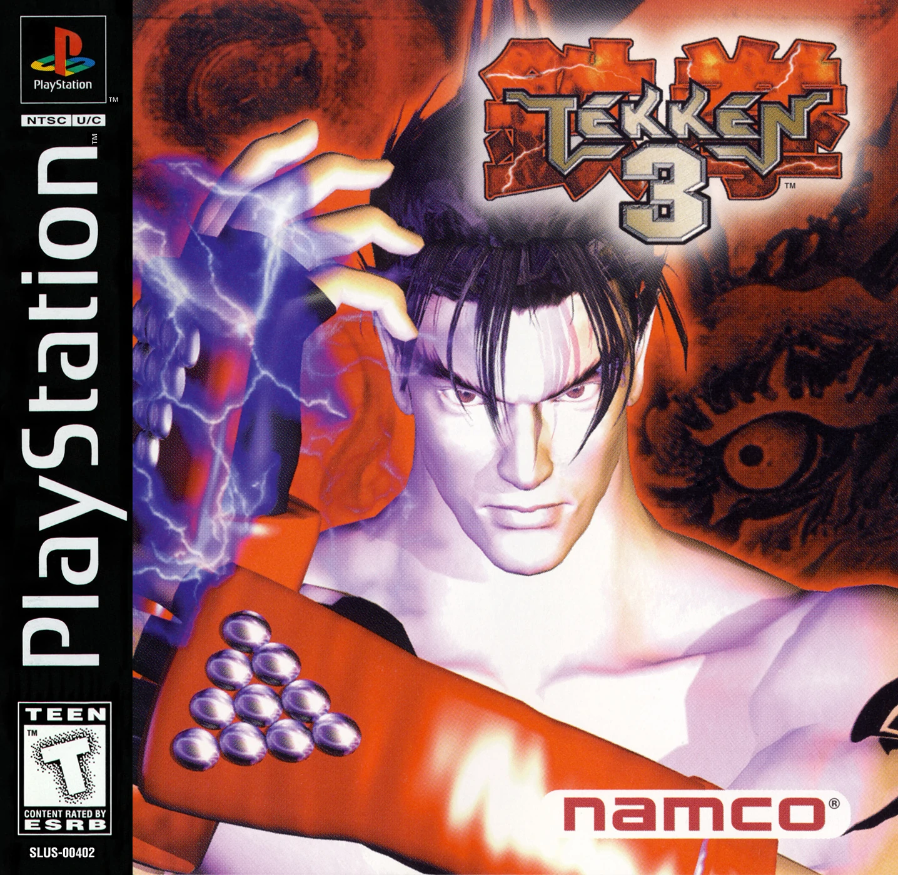

Resident Evil 2
Resident Evil 2 is to Resident Evil what Aliens was to Alien. Don’t believe us? Think about the tension of that first game, how it built up to that first zombie encounter.

Tekken 3
The Tekken series was the premier 3D fighting franchise on Sony’s
console from the moment it arrived, and the third installment was easily
the pinnacle of Namco’s achievements with the series in that era.
Resident Evil 2
Resident Evil 2 is to Resident Evil what Aliens was to Alien. Don’t believe us?
Think about the tension of that first game, how it built up to that first zombie
encounter.

Final Fantasy 7
The seventh installment of the Final Fantasy series takes place in a post-modern,
steampunk, sci-fi world where high technology reigns and where robots and
bio-engineered mutants co-exist with humans and dragons.

Castlevania: Symphony Of The Night
The game dispensed with the linear progression of past Castlevania games,
instead allowing you to explore a sprawling castle that opens up steadily
as Alucard gains new abilities. The RPG elements are well integrated,
the graphics have aged with grace and the soundtrack is truly excellent too.